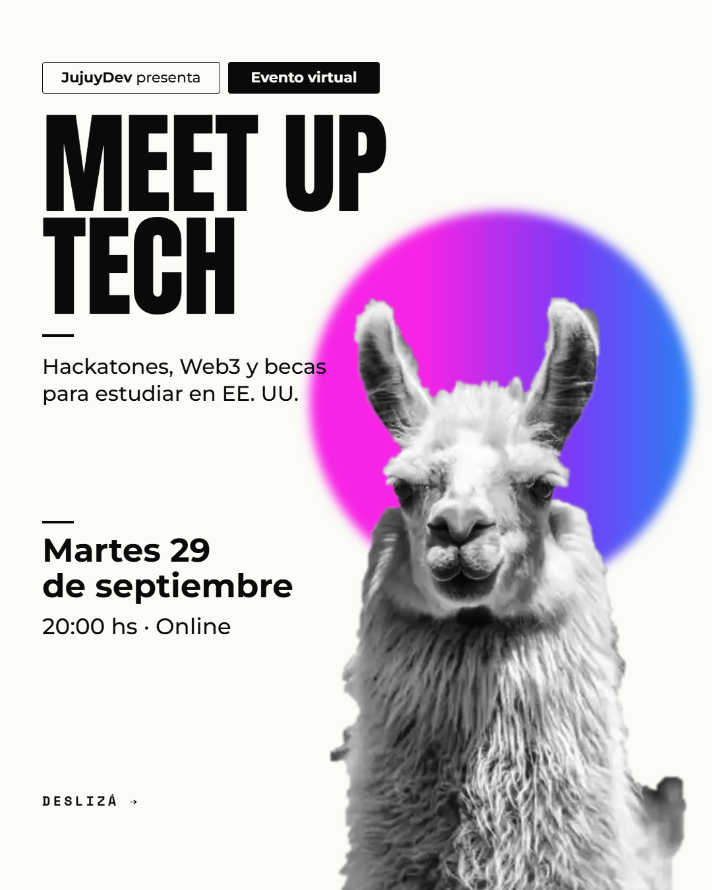

Cuándo y dónde
Tres charlas para prepararse para el hackatón simultáneo de Superteam AR y Monad.
- Cuándo
- Martes 29 de septiembre de 2026 · 20:00 hs
- Dónde
- Online por Google Meet
- Entrada
- Gratuita
Un nuevo encuentro de la comunidad, esta vez en línea por Google Meet. Nadie puede lograrlo todo solo, y estos espacios son para hacer: las soluciones no necesitan que seas un genio, sino que te animes.
Tres charlas para prepararse para el hackatón simultáneo de Superteam AR y Monad.
Tres charlas sobre hackatones, Web3 y becas para estudiar en EE. UU., a cargo de Joaquín Cortez, Lautaro Alejo y Juan Coro. Se conectaron 77 personas para prepararse para el hackatón simultáneo de Superteam AR y Monad.
Gracias a todos los que se conectaron, siguieron las charlas con atención y se animaron a preguntar. También a Facundo Padilla y Agustín Juárez por su apoyo, y a Erasmo Hernández, que se la jugó con cupones para la comunidad.

Anunciamos cada encuentro primero en el grupo de WhatsApp y en @jujuy.dev.